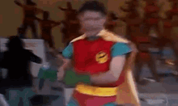

Tarzan Untamed
É um jogo de ação e aventura de 2001 desenvolvido pela Ubisoft Montreal e publicado pela Ubisoft para PlayStation 2 e GameCube .
Guitar Hero Brazuca
Uma modificação feita por fãs brasileiros para o PlayStation 2. O jogo troca a trilha sonora original por clássicos do rock, pop rock e hardcore nacional, incluindo bandas como Mamonas Assassinas, Pitty, Charlie Brown Jr. e Raimundos

Black
É um jogo de tiro em primeiro pessoa, o jogo é notável por sua ação altamente estilizada, bem como por sua qualidade de som e foco em efeitos destrutivos durante o jogo.
Driv3r
É um jogo de ação e aventura, A história do jogo coloca o jogador no papel de John Tanner, um agente infiltrado do FBI, enquanto ele investiga uma quadrilha de contrabando de carros
God of War 2
O jogo é vagamente baseado na mitologia grega e ambientado na Grécia Antiga, com a vingança sendo o tema central. O personagem do jogador é o protagonista Kratos, o novo deus da guerra que tomou o lugar de Ares depois de ter o matado.
Downhill Domination
é um jogo de corrida que tem três opções disponíveis no menu principal: um jogador, multijogador e um menu de opções que permite aos jogadores modificar elementos da jogabilidade, como a dificuldade e a visualização dos itens desbloqueados durante o jogo.
Grand Theat Auto
É um jogo eletrônico de ação-aventura desenvolvido pela Rockstar North e publicado pela Rockstar Games. O jogo se passa no estado ficcional de San Andreas, com a história seguindo Carl "CJ" Johnson em sua luta para lidar com guerras de gangues, confrontos com policiais e as relações com sua família e amigos.
Bully
O jogo é jogado em uma perspectiva em terceira pessoa e seu mundo aberto pode ser explorado a pé, de skate, scooter, bicicleta ou kart. Os jogadores controlam Jimmy enquanto ele tenta se tornar mais popular entre os vários "grupos" da escola, além de frequentar as aulas e completar diversas missões secundárias.
TonyHawks 4
é um dos jogos de desporto mais aclamados de sempre, lançado originalmente pela Activision em 23 de outubro de 2002. Desenvolvido pela lendária Neversoft, o título revolucionou a franquia ao abandonar o tradicional limite de tempo de dois minutos por corrida